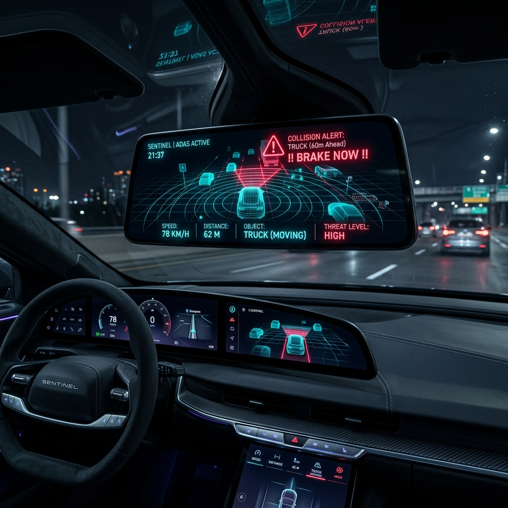
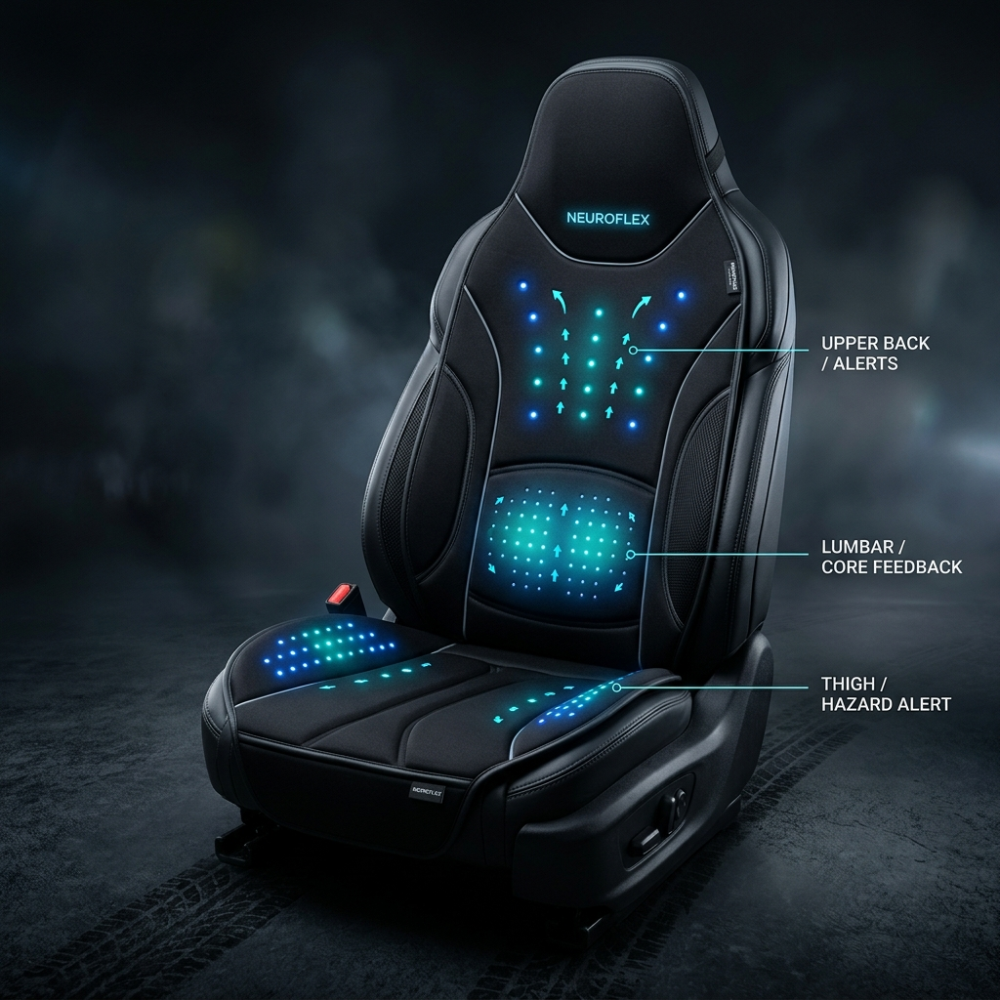

Sentinel convierte cualquier retrovisor inteligente Android de bajo costo en un sistema ADAS de alerta temprana de colisión con sensor de radar mmWave y retroalimentación háptica 360° en el asiento.

El 72% de los vehículos en circulación a nivel mundial tienen más de 8 años de antigüedad y carecen por completo de sistemas de asistencia a la conducción.
Las tecnologías ADAS de fábrica (Tesla Autopilot, Toyota Safety Sense) están reservadas para vehículos nuevos de gama media/alta. Retrofitar con OEMs cuesta más de $2,000 USD.
Software sofisticado sobre hardware comercial listo para usar (*Commercial Off-The-Shelf*). Aprovechamos retrovisores Android de importación masiva + sensores mmWave de bajo costo.
Sustituimos o complementamos las ruidosas alertas sonoras con un cobertor de asiento inteligente (ESP32 + BLE). El conductor *siente* la amenaza en la espalda o muslos inmediatamente.
Gestionamos los costos de entrada vendiendo Sentinel en dos niveles modulares.
Diseñado para conductores particulares que buscan alerta temprana sin modificar el interior del auto.
La experiencia de protección definitiva con estimulación física táctil en el asiento.
En situaciones de emergencia en carretera, el oído y la vista suelen estar sobrecargados. Sentinel activa estimulación háptica direccional en el cobertor de asiento para indicarle al conductor instintivamente de dónde proviene el riesgo.

Haz clic en las diferentes zonas de peligro o ajusta la velocidad para simular la detección del radar, el cálculo de TTC (Time To Collision), el HUD visual y la vibración del asiento háptico.
Haz clic en una zona para simular un objetivo de radar en curso de colisión:
Clean Architecture en Kotlin + Motor C++ JNI con Filtro de Kalman + BLE GATT de baja latencia en ESP32.
| Componente | Modelo Sugerido | Interfaz | Documentación / SDK | Rol en Sentinel |
|---|---|---|---|---|
| Radar mmWave | HLK-LD2450 | UART / USB @ 256k | ✅ Documentación Binaria Pública | Detección primaria de distancia y velocidad Doppler |
| Cámara USB | Sony IMX322 1080p | USB UVC | ✅ Camera2 API Nativo Android | Clasificación de objetos (YOLO TFLite) |
| IMU 9-DoF | Bosch BNO055 | I²C / USB-Serial | ✅ SDK Open-Source Bosch | Fusión inercial y predicción de trayectoria vehicular |
| Microcontrolador Háptico | ESP32-S3 Mini | BLE 5.0 / I²C | ✅ ESP-IDF & Arduino NimBLE | Servidor BLE GATT para tapete de asiento |
| Controladores Hápticos | TI DRV2605L (x4) | I²C Multiplexado | ✅ Adafruit DRV2605 Library | Control de efectos LRA/ERM en 4 zonas |
Estructura de repositorio Clean Architecture en Kotlin, motor JNI C++ con Filtro Kalman, parser de protocolo binario LD2450 y firmware ESP32 NimBLE.
Validación de comunicación serial física con el radar HLK-LD2450 en retrovisor Android real y calibración de ruido.
Refinamiento del algoritmo TTC en C++ y ajuste de umbrales dinámicos por velocidad del vehículo.
Ensamblaje del prototipo de tapete de asiento con 4 actuadores LRA y validación de latencia BLE GATT < 30ms.
Pruebas de aceleración y frenado a 30, 60 y 90 km/h en pista de pruebas y entrega de la versión v1.0 MVP.
Estamos desarrollando la capa de software IP y hardware modular que permitirá actualizar más de 1.4 mil millones de vehículos sin gastar miles de dólares.